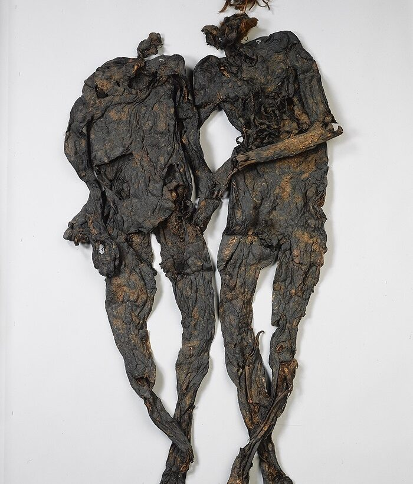

Das Weerdinge-Paar. Das Weerdinge-Paar sind zwei Moorleichen aus der späten Eisenzeit. Sie wurden 1904 von einem Torfstecher im Weerdingerveen in Drenthe entdeckt. Die Leichen waren durch den sauren Torf gut erhalten.
Zunächst ging man davon aus, dass es sich um einen Mann und eine Frau handelte. DNA-Analysen ergaben später, dass es zwei Männer mit verschiedenen Müttern waren. Sie lebten um den Beginn unserer Zeitrechnung. Einer der beiden könnte einen Stich in die Brust erlitten haben. Sie wurden nackt im Moor bestattet. Solche Funde deuten auf Gewalt und möglicherweise auf Bestrafung für Verbrechen oder rituelle Opfer hin, wie sie auch von römischen Autoren beschrieben werden.